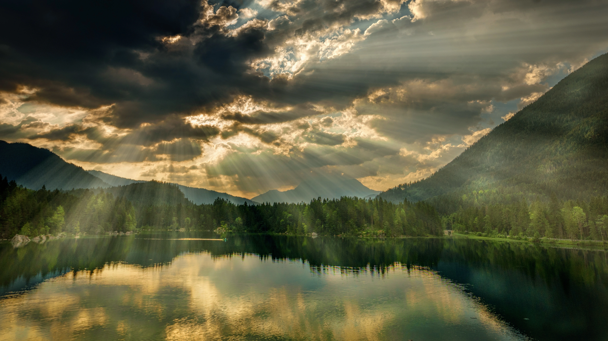
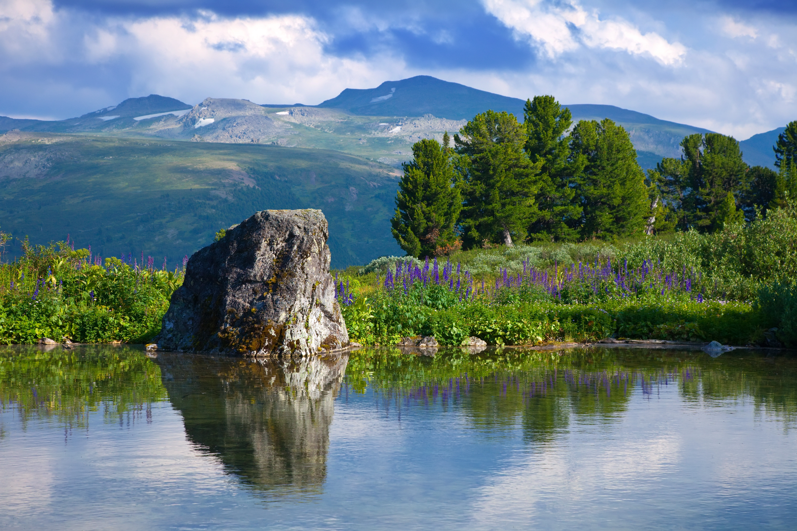
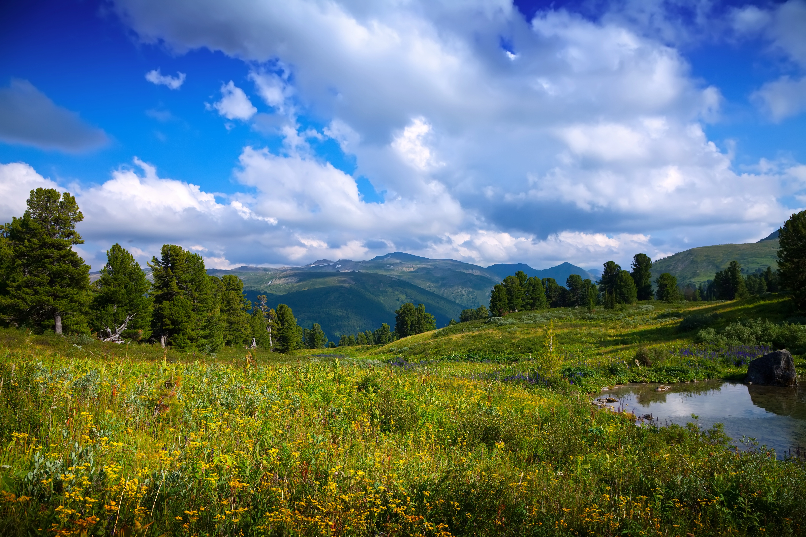
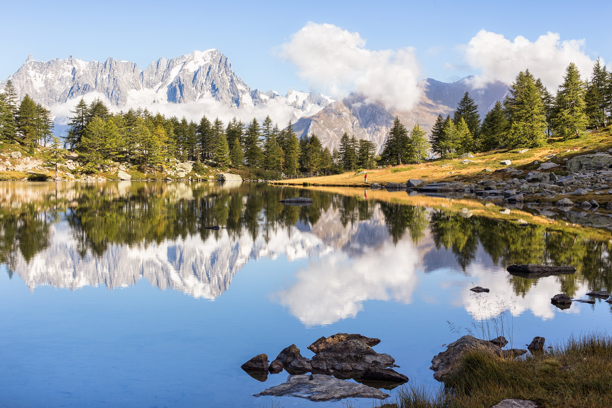

Россия — это удивительная страна с невероятным разнообразием природы. От суровых северных морей до теплых южных гор — здесь каждый найдет пейзаж по душе. Особенно впечатляют озера и горы Алтая, где воздух чист и прозрачен.

Летние путешествия по Алтаю оставляют незабываемые впечатления. Кристально чистые водоемы отражают небо, а солнечные лучи, пробивающиеся сквозь облака, создают волшебную атмосферу. Это идеальное место для отдыха от городской суеты.


